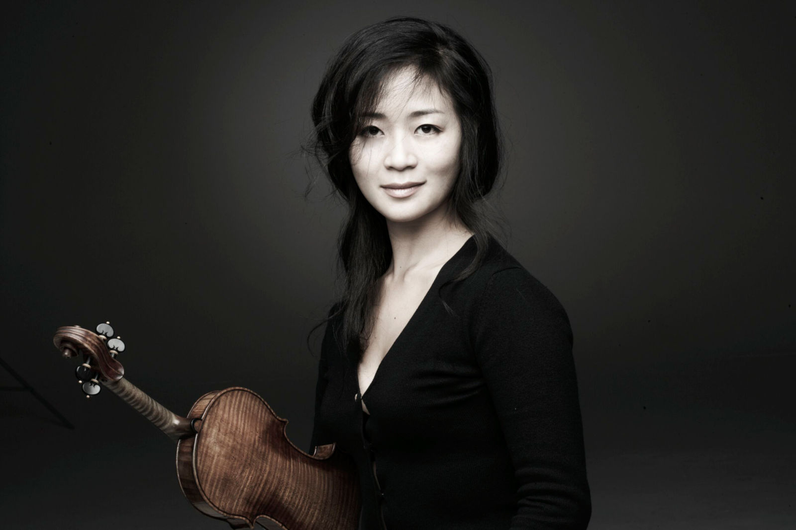
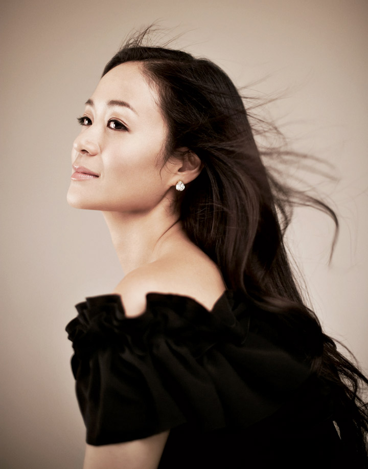
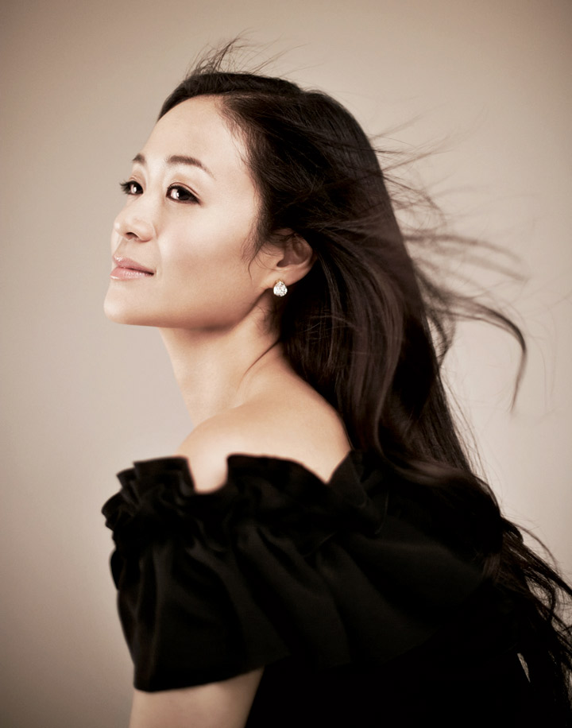

Violinist Chee-Yun's flawless technique, dazzling tone and compelling artistry have enraptured audiences on five continents. Charming, charismatic and deeply passionate about her art, Chee-Yun continues to carve a unique place for herself in the ever-evolving world of classical music.
Chee-Yun has performed with many of the world's foremost orchestras and conductors. Orchestral highlights include her tours of the United States with the San Francisco Symphony under Michael Tilson Thomas and Japan with the NHK Symphony, a concert with the Seoul Philharmonic conducted by Myung-Whun Chung that was broadcast on national television, and a benefit for UNESCO with the Orchestra of St. Luke’s at Avery Fisher Hall. Chee-Yun has performed with such distinguished conductors as Michael Tilson Thomas, Jaap van Zweden, Manfred Honeck, Hans Graf, James DePriest, Jesus Lopez-Cobos, Krzysztof Penderecki, Neeme Järvi, Pinchas Zukerman, Giancarlo Guerrero, José Luis Gomez, Miguel Harth-Bedoya, and Carlos Kalmar. She has appeared with the Toronto, Pittsburgh, Dallas, Atlanta, and National symphony orchestras, as well as with the Saint Paul and Los Angeles Chamber Orchestras. Other orchestral engagements include performances with the Orquesta Sinfonia Nacional and the Mobile and Pasadena Symphonies, in addition to appearances with the National Philharmonic, Colorado and Pacific Symphonies, and the Tucson, Detroit, and Pensacola symphony orchestras. A champion of contemporary music, Chee-Yun has performed Christopher Theofanidis’ Violin Concerto conducted by David Alan Miller as part of the Albany Symphony's American Festival, in addition to performing Kevin Puts’ Violin Concerto with the Fort Worth Symphony Orchestra.
As a recitalist, Chee-Yun has performed in many major U.S. cities, including New York, Chicago, Washington, Los Angeles, San Francisco, and Atlanta. Career highlights include appearances at the Kennedy Center's "Salute to Slava" gala honoring Mstislav Rostropovich and with the Mostly Mozart Festival on tour in Japan, as well as a performance with Michael Tilson Thomas in the inaugural season of Carnegie Hall's Zankel Hall and the U.S. premiere of Penderecki’s Sonata No. 2 with pianist Barry Douglas. In 2016, Chee-Yun performed as a guest artist for the Secretary General at the United Nations in celebration of Korea's National Foundation Day and the 25th anniversary of South Korea joining the UN. Other career highlights include recitals in St. Paul, Buffalo, Omaha, Scottsdale, and Washington, D.C., duo recitals with cellist Alisa Weilerstein, a recital tour with pianist Alessio Bax, and a performance at American Ballet Theatre's fall gala. Firmly committed to chamber music, Chee-Yun has toured with Music from Marlboro and appears frequently with Spoleto USA, a project she has been associated with since its inception. Additional chamber music appearances include performances at the Ravinia, Aspen, Bravo! Vail Valley, La Jolla, Caramoor, Green Music, Santa Fe, Orcas Island, Hawaii Performing Arts, and Bridgehampton festivals in the U.S.; the Great Mountains Music Festival in South Korea; the Clandeboye Festival with Camerata Ireland in Northern Ireland; the Opera Theatre and Music Festival in Lucca, Italy; the Colmar Festival in France; the Beethoven and Penderecki festivals in Poland; and the Kirishima Festival in Japan.
Chee-Yun has received exceptional acclaim as a recording artist since the release of her debut album of virtuoso encore pieces in 1993. Her recent recording of the Penderecki Violin Concerto No. 2 on Naxos was acclaimed as "an engrossing, masterly performance" (The Strad) and "a performance of staggering virtuosity and musicality" (American Record Guide).
Her releases on the Denon label include Mendelssohn's E-minor Violin Concerto, Vieuxtemps' Violin Concerto No. 5, Lalo's Symphonie Espagnole and Saint-Saëns' Violin Concerto No. 3 with the London Philharmonic under the direction of Maestro Lopez-Cobos, and violin sonatas from Debussy, Fauré, Franck, Saint-Saëns, Szymanowski, Brahms and Strauss. Two compilation discs, Vocalise d'amour and The Very Best of Chee-Yun, feature highlights of Chee-Yun's earlier recordings. In 2007, Chee-Yun recorded the Beethoven Triple Concerto with Camerata Ireland, pianist Barry Douglas, and cellist Andrés Diaz for Satirino Records. In 2008, Decca/Korea released Serenata Notturno, an album of light classics that went platinum within six months of its release.
Chee-Yun has performed frequently on National Public Radio's Performance Today and on WQXR and WNYC radio in New York City. She has been featured on KTV,a children's program on the cable network CNBC, A Prairie Home Companion, Public Radio International, and numerous syndicated and local radio programs across the world. She has appeared on PBS as a special guest on Victor Borge's Then and Now 3, in a live broadcast at Atlanta’s Spivey Hall concurrent with the Olympic Games, and on ESPN performing the theme for the X Games. In 2009, she also appeared in an episode of HBO's hit series Curb Your Enthusiasm. A short documentary film about Chee-Yun, “Chee-Yun: Seasons on the Road,” premiered in 2017 and is available on YouTube.
Chee-Yun's first public performance at age eight took place in her native Seoul after she won the Grand Prize of the Korean Times Competition. At 13, she came to the United States and was invited to perform Vieuxtemps’ Concerto No. 5 in a Young People's Concert with the New York Philharmonic. Two years later, she appeared as soloist with the New York String Orchestra under Alexander Schneider at Carnegie Hall and the Kennedy Center. In 1989, she won the Young Concert Artists International Auditions, and a year later she became the recipient of the prestigious Avery Fisher Career Grant. In Korea, Chee-Yun studied with Nam Yun Kim. In the United States, she has worked with Dorothy DeLay, Hyo Kang, Daniel Phillips, and Felix Galimir (chamber music) at The Juilliard School.
In addition to her active performance and recording schedule, Chee-Yun is a dedicated and enthusiastic educator. She gives master classes around the world and has held several teaching posts at notable music schools and universities. Her past faculty positions have included serving as the resident Starling Soloist and Adjunct Professor of Violin at the University of Cincinnati College-Conservatory of Music and as Visiting Professor of Music (Violin) at the Indiana University School of Music. From 2007 to 2017, she served as Artist-in-Residence and Professor of Violin at Southern Methodist University in Dallas.

Chee-Yun's Violin
Chee-Yun’s magnificent violin was made in 1669 by Francesco Ruggieri. At the time, the northern Italian city of Cremona bustled and thrived in the art of string instrument-making. Luthiers such as Ruggieri and Antonio Stradivari were very much influenced by the craftsmanship of Nicolo Amati, who at that time was regarded as the star genius of Cremona. According to Tarisio, Ruggieri was influenced by Amati’s works as seen in his violins from 1670 to 1680’s – considered to be Ruggieri’s golden period of his career.
During her sophomore year at Juilliard, the then 21-year-old Chee-Yun’s ever-growing concert schedule put her in search of an instrument on which she could concertize. Chee-Yun gravitated towards a Ruggieri from Chicago’s famed Bein & Fushi. Before purchasing the violin, Chee-Yun had the instrument appraised by the renowned antique violin appraiser and expert, Dario D’Attili, who was astounded by the extreme preserved state of the violin- the original varnish was still intact, no cracks or any sign of wear and tear.
Not much was known of the violin’s provenance other than an account from Peter Biddulph, a British violin dealer from whom Bein & Fushi purchased the violin. It belonged to a family in Norway for nearly a century, according to Biddulph.
To learn more about the speculation of Chee-Yun’s violin being buried with its previous owner for nearly 200 years in an article from the Washington Post, click here.
 



{kind=link}
{kind=link}
{kind=link}
{kind=link}
{kind=link}
{kind=link}
{kind=link}
{kind=link}
{kind=link}
{kind=link}
{kind=link}
{kind=link}